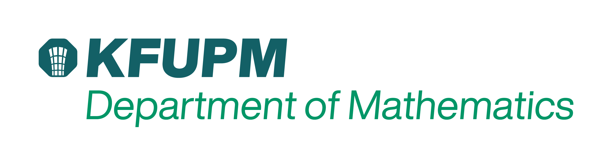

01
Principles
Five rules sit behind every decision on this page. Labels show where each rule comes from: KFUPM rule from the brand guidelines, must follow; Our choice decided for the web, can change; Needs approval waiting for the KFUPM branding team.
- 1
KFUPM brand first
The primary colours dominate. Turquoise, Beige and White make up most of every page.
- 2
One look, five sites
All five websites use the same colours. The CCM college colour is the only accent: for rings, bars and lines, never for text.
- 3
Two typefaces
KFUPM Display for headings, IBM Plex Sans Arabic for everything else.
- 4
Accessible by default
Text contrast of at least 4.5:1, 44px touch targets, visible focus and calm motion.
- 5
Made for the CMS
Every class starts with
ccm-, there's no JavaScript, and components fit any column they're placed in.
02
Colour
Most of every page is White, Beige and Turquoise. Green, the secondary colours and the CCM college colour are small accents.
How much of each Our choice
The guidelines say the primary colours "should be the dominant elements" (p31), but give no exact ratio. Use this split as a guide:
The last 10% is Green, the secondary colours and the CCM college colour.
Primary KFUPM rule · p31
Turquoise
--ccm-turquoiseThe KFUPM colour. Bands, buttons, links, icons and the logo.
Green
--ccm-greenGraphics, the FAST Matrix, and headlines of 24px and up. For smaller green text use Green d1.
Beige
--ccm-beigeWarm surfaces, tags and light buttons on Turquoise.
Secondary KFUPM rule · p31
These "add flexibility and variety, complementing the primary colors without diminishing their prominence". Use them small.
Sand
--ccm-sandBorders of controls (3.1:1) and quiet accents.
Yellow
--ccm-yellowHighlights. As text, only large text on Turquoise.
Blue
--ccm-blueAccents and information. Never text on White.
Gray
--ccm-grayDisabled states and dividers.
White
--ccm-whitePage background and text on Turquoise.
Black
--ccm-blackRarely needed. Body text uses Turquoise d3.
Web palette: tints and shades KFUPM rule · p39
Each colour has three lighter steps (-l1 to -l3) and three darker steps (-d1 to -d3). When you need a lighter or darker colour, pick a step. Don't invent hex values.
Feedback KFUPM rule · p39
Success
--ccm-successIcons and borders. Text: Green d1.
Error
--ccm-error-strongThe only red that passes 4.5:1 as text on White.
Warning
--ccm-warningBackgrounds and icons. Never text.
Info
--ccm-infoBackgrounds and icons. Never text.
Colour roles: what components use Our choice
Components never use a raw colour. They use a role, so a role can change in one place.
| Role token | Colour | Use |
|---|---|---|
--ccm-text | Body text and headings (Turquoise d3). | |
--ccm-text-muted | Secondary text: departments, dates, contact lines. | |
--ccm-text-inverse | Text on Turquoise. | |
--ccm-text-inverse-muted | Secondary text on Turquoise (shown on Turquoise). | |
--ccm-line-inverse | Borders on Turquoise, such as the ghost button. | |
--ccm-fill-inverse | Light fill on Turquoise: icon buttons, ghost-button hover. | |
--ccm-fill-inverse-strong | Hover of a filled control on Turquoise. | |
--ccm-backdrop | Dims the page behind a pop-up. | |
--ccm-link | Links and text buttons. | |
--ccm-link-hover | Hover and pressed state. | |
--ccm-surface | Page background. | |
--ccm-surface-soft | Panels and highlighted cards. | |
--ccm-surface-strong | Bands, banners, primary buttons. | |
--ccm-line | Card borders and dividers (decorative). | |
--ccm-line-strong | Borders that people must see: inputs, icon buttons. | |
--ccm-focus | Keyboard focus ring. | |
--ccm-accent | The CCM college colour, the same on all five sites: rings, bars, lines. Never text. |
Text on backgrounds
The guidelines list approved pairs (p32), but a brand "Pass" doesn't always meet the web accessibility standard (WCAG AA). For example, Yellow on Turquoise is a brand Pass but measures only 4.15:1. Use a pair only if both agree. Each cell below shows the measured ratio.
- OK Any text size: brand Pass and at least 4.5:1
- L Large text only (24px+, or 18.66px+ bold): brand allows and at least 3:1
- No Don't use
The White row isn't in the guidelines' grid, so it's judged on the measured ratio alone.
03
The CCM college colour
All five websites use CCM colouring. The CCM college colour is the only extra colour, and departments don't have colours of their own.
One look for all five sites Our decision
CCM, ICS, COE, MATH and ISE share every colour, font, size and component in this guide. The sites are told apart by the name and logo in the header, not by colour.
This matches the guidelines: KFUPM defines a colour for each college but none for departments (p34), and a design must never use two college colours (p36). The departments are part of CCM, so they use the CCM colour.
- CCMCollege of Computing and Mathematics
- Site
- ccm.kfupm.edu.sa
- Platform
- Sitefinity 14.4
- ICSInformation & Computer Science
- Site
- ics.kfupm.edu.sa
- Platform
- Sitefinity 14.4
- COEComputer Engineering
- Site
- coe.kfupm.edu.sa
- Platform
- Sitefinity 15.1
- MATHMathematics
- Site
- math.kfupm.edu.sa
- Platform
- Sitefinity 14.4
- ISEIndustrial & Systems Engineering
- Site
- ise.kfupm.edu.sa
- Platform
- Django (Wagtail) · later
How to use it KFUPM rule · p34–36
- An accent, never the main colour. Always use it together with Turquoise, Beige and White, and only in small amounts.
- Decoration only: the band under the page head, the bar under section titles, rings around photos, lines in diagrams and quote borders.
- Never for text, and never as a large background. White text on it measures only , far below the 4.5:1 minimum.
- Not in the FAST Matrix (p56), and not in the logo. Use the Turquoise-and-Green logo on light backgrounds and the white logo on dark ones.
Why the exact value isn't settled yet Needs approval
The KFUPM brand package should give one value for the CCM colour, but it gives four, in four different places. Press Preview on a card to see this whole page with that colour. To share a preview, add it to the address, for example index.html?college=4EABB1.
-
#6BBDBE
1 · Written in the guidelines
Brand Guidelines PDF, page 34
The college-colours page prints it in four formats: HEX 6BBDBE, RGB 107-189-190, CMYK 59-0-27-0 and Pantone 7472 U. All four describe the same colour.
-
#49C0BF
2 · What the PDF shows on screen
Same PDF, pages 34–36 (measured)
The colour you actually see in the swatch box and the CCM examples. A PDF stores colours for printing (CMYK), and the screen converts them, so the box looks a little different from its own label.
-
#4EABB1In use now
3 · Inside the logo files
Branding › CCM Logo › *_CollegeColor.svg
The college-colour versions of the CCM logo use a slightly darker teal, probably converted from print colour by different software. This is the value the CCM team already uses.
-
#9BC9C3
4 · In the colour swatch files
Branding › 02 Colors › .ase files
The files designers load into Illustrator or Photoshop. The screen file says #9BC9C3 and the print file says CMYK 36-7-24-0. Both agree with each other, but it's a paler colour than the guidelines.
What this means: there are really two different colours, not four.
- Values 1, 2 and 3 are the same medium teal. They differ only because each one was converted between print colour (CMYK) and screen colour (RGB) in a different way.
- Value 4 is a paler teal. Its print recipe (36% cyan) is different from the guidelines (59% cyan), so it isn't a conversion difference. It may be an older version or a mistake, but we can't tell.
What we use now: value 3, #4EABB1, because the CCM team already uses it, and it's the same colour family as the guidelines. It's one line in tokens.css (--ccm-college), so if the branding team chooses another value, one change updates all five sites.
Question for the KFUPM branding team: "We use #4EABB1 (from the CCM logo files) as the screen colour of the College of Computing and Mathematics. Can you confirm it? The Brand Guidelines (page 34) say #6BBDBE, and the .ase colour files say #9BC9C3."
04
Typography
Two typefaces and one size rule, a fluid modular scale: heading sizes come from a formula and grow smoothly from phone to desktop.
Typefaces KFUPM rule · p42, p46, p47
Aa
KFUPM Display
Headlines and key statements. Already slanted 5°, so it's never set in italic. Use it at 18px and up only.
كلية الحوسبة والرياضيات
Aa
IBM Plex Sans Arabic
Everything that isn't a heading: paragraphs, labels, buttons, tables, menus.
كلية الحوسبة والرياضيات
Fallback when a font can't load: Segoe UI (p47). On the websites, the font files (WOFF2, the web format) are uploaded once to each site's Sitefinity library and the CSS links to them. See How to use it.
Type scale: fluid modular scale Our choice
The rule has two parts:
- Modular scale. Every size is the size below it multiplied by the same number, the ratio. This keeps the jump between heading levels even. The common ratios are named after musical intervals; we use two of them.
- Fluid type. Phones use a smaller ratio and desktops a bigger one. In between, every size grows smoothly with the screen width, with no sudden jumps at breakpoints. In CSS this is
clamp(phone size, growth, desktop size). It's the same method as the Utopia type calculator (utopia.fyi).
size = 16px × ratiostep
- Base (step 0)
- 16px, the body text size, on every screen.
- Phones (360px)
- ratio 1.125, called Major Second. Small steps keep long titles, such as "College of Computing and Mathematics", on fewer lines.
- Desktops (1280px+)
- ratio 1.2, called Minor Third. Bigger steps make the heading levels easier to tell apart.
- In between
- Sizes grow smoothly from 360px to 1280px, then stop. 1280px is where the content reaches its 1200px maximum width.
- Example: H2
- step 4. Phone: 16 × 1.1254 = 25.6px. Desktop: 16 × 1.24 = 33.2px.
- Below 16px
- Small (14px) and Label (12px) are fixed sizes, not steps: following the ratio down makes text too small to read.
The sizes in the table are calculated from the CSS, so they always match the code.
| Style | Specimen | Step | Phone 360px | Tablet 820px | Desktop 1280px+ | Use for |
|---|
Rules
Do
- Use KFUPM Display Bold for every heading. p42
- Use only the sizes in the scale (the
--ccm-text-*tokens). Never type a pixel size for text. - Use Plex for all other text, at 16px minimum for paragraphs. p46
- Keep paragraphs under 70 characters per line, with 1.6 line height.
- Use 14px only for meta text (contact lines, dates, captions) and 12px only for UPPERCASE labels.
- Use Title Case for page and section titles, and Sentence case for buttons, labels and text.
- Use weight to show importance: 400 for text, 500 for emphasis in UI, 600 for labels and buttons, 700 for strong text.
Don't
- Italicise KFUPM Display. It already has a 5° slant. p45
- Use Plex for headlines. p49
- Use KFUPM Display for paragraphs or below 18px. p49
- Set whole sentences in UPPERCASE.
- Underline anything that isn't a link.
- Use any other fonts (Open Sans, Hacen Tunisia and KacstOffice are on the live sites today).
Rich text: normal content pages
Most pages (programs, about, research) are typed into the CMS editor. Wrap that content in .ccm-prose and it follows the scale automatically.
Bachelor of Science in Computer Science
The program prepares students to design and build software systems. Graduates work in industry, research and government. Read the degree plan for the full list of courses.
Program objectives
- Apply computing theory to solve real problems.
- Work in teams and communicate clearly.
- Keep learning throughout their careers.
A short quote or key statement uses the CCM college colour as its border.
| Course | Title | Credits |
|---|---|---|
| ICS 104 | Introduction to Programming | 3 |
| ICS 108 | Object-Oriented Programming | 4 |
Sample text for illustration only.
05
Spacing Our choice
All space is a multiple of 4px. Pick a step from the scale. Don't use values in between.
Which step to use
- 4 to 12px: inside small elements, such as the gap between an icon and its text, or tag padding.
- 16 to 24px: inside cards, and between related items such as a name and its role.
- 32 to 48px: between components, such as a title and the cards below it.
- 48 to 80px: between page sections. Use
--ccm-section-space, which changes by device (48, 64, 80).
06
Layout & breakpoints
Pages switch layout at six screen widths. Margins, gutters, columns and section spacing grow with the screen. Resize this window and watch the pill in the bottom corner.
Breakpoints Our choice · same as Bootstrap 5
These are the same breakpoints as Bootstrap 5, which all four Sitefinity themes use, so our pages change layout at the same widths as each site's header and menu.
| Device | Name | Screen width | Columns | Page margin | Gutter | Section space | Typical devices |
|---|---|---|---|---|---|---|---|
| Phone | xs | 0–575px | 4 | 16px | 16px | 48px | iPhone, Android phones |
| Large phone | sm | 576–767px | 4 | 24px | 16px | 48px | Phones sideways, small tablets |
| Tablet | md | 768–991px | 8 | 32px | 24px | 64px | iPad upright |
| Laptop | lg | 992–1199px | 12 | 32px | 24px | 64px | iPad sideways, small laptops |
| Desktop | xl | 1200–1399px | 12 | 40px | 32px | 80px | Most laptops |
| Large desktop | xxl | 1400px+ | 12 | 40px+ | 32px | 80px | Office monitors |
- Page margin is the space between the screen edge and the content. Gutter is the space between columns.
- Content is never wider than 1200px. On bigger screens it stays centred and the margins grow.
- The values live in
tokens.css(--ccm-page-margin,--ccm-gutter,--ccm-cols,--ccm-section-space) and change automatically at each breakpoint.
Inside Sitefinity: components fit their column Our choice
Sitefinity page templates put a sidebar next to the content, so the content column is narrower than the screen. Our components therefore measure the width of their column, not the screen (CSS container queries). Every component uses the same three column widths:
| Column width | What components do | Example |
|---|---|---|
| under 540px | Compact: one column, smaller photos, small cards two per row | Phones |
| 540–719px | Roomier spacing, still one main column | Large phones, tablet with sidebar |
| 720–859px | Two columns | Tablets, laptop content column |
| 860px+ | Up to four columns | Desktop content column |
Pop-ups are the exception: they measure the screen, because they cover it.
07
Shape & depth
Soft, consistent corners; thin borders; shadows only when something lifts or floats.
Corner rounding Our choice
The guidelines don't specify rounded corners. KFUPM's own shapes are the octagon in the logo and the 5° slant. Keep those for the logo and the FAST graphics, and don't slant UI boxes.
--ccm-radius-smInputs, small images
--ccm-radius-mdList rows, small panels
--ccm-radius-lgCards and panels
--ccm-radius-xlBanners, bands, pop-ups
--ccm-radius-pillButtons and tags
--ccm-radius-roundPhotos and icon buttons
Rule: a box inside another box uses a smaller radius, for example a large card (16px) holding a list row (12px).
Borders
| Token | Width | Sample | Use |
|---|---|---|---|
--ccm-border-hairline | 1px | Card borders, dividers (Gray l3) | |
--ccm-border-control | 2px | Outline buttons, focusable controls | |
--ccm-border-ring | 3px | Accent ring around photos | |
--ccm-border-bar | 4px | Bar under section titles, quote border | |
--ccm-border-band | 6px | Band under the page head |
Shadows
--ccm-shadow-smSmall lift: menus, sticky bars
--ccm-shadow-mdA card on hover
--ccm-shadow-lgPop-ups and dialogs
Cards at rest use a 1px border, not a shadow. Shadows are tinted with Turquoise d3, never pure black.
08
Motion Our choice
Short and quiet. Motion shows that something responded, and is never decoration.
| Token | Value | Use |
|---|---|---|
--ccm-duration-fast | Hover colour changes | |
--ccm-duration | Cards lifting, arrows, toggles | |
--ccm-duration-slow | Pop-ups and panels opening |
- Move things by at most a few pixels (a card lifts 3px, an arrow moves 3px).
- No auto-playing carousels, parallax or bouncing.
- When someone's device asks for reduced motion, all animation is switched off. This is built into
base.css. - An animated FAST Matrix must also respect reduced motion.
09
Icons
Simple line icons with rounded ends, in Turquoise. p70
- Grid and stroke: 24px grid, 1.8px stroke, round ends and joins. Our choice
- Sizes: 16px next to 14px text, 18px next to 16px text, 24px standalone.
- Colour: Turquoise, or the text colour around it. Beige or White on Turquoise.
- Always with a label. An icon-only button needs hidden text (
ccm-sr-only) saying what it does. - Built with CSS, not <svg> tags, because Sitefinity's editor can strip SVG. Add classes to an element that has text:
icon and text
<a class="ccm-has-ico ccm-c-mail" href="…">Email</a>; icon alone<span class="ccm-ico ccm-c-mail"><span class="ccm-sr-only">Email</span></span>. Never leave the tag empty: the editor deletes empty tags. - Illustrative icons: the official KFUPM icon set (Branding/04 Icongraphy, 13 icons) is for infographics and feature blocks, not small UI icons.
Font Awesome, which the live sites use today, should be phased out. Its style doesn't match the brand.
10
Photos, logos and brand graphics
People photos Our choice
Today's photos are too small and inconsistent (the Dean's is 300 × 300px). New photos should follow one standard:
- Original: at least 1000 × 1250px (4:5 portrait), head and shoulders, eyes in the top third.
- Background: plain and light, the same for everyone. Natural light, a real smile. p61: authentic
- For the web: export 800px wide, JPG, under 200 KB. The CMS crops circles and squares from it.
- Alt text: the person's name. Never "..." or the file name.
FAST Matrix KFUPM rule · p51–58
The vertical-bar pattern in the header of this page is the FAST Matrix (pattern "Four", Green on Turquoise). On white cards it is used in Beige, so it stays light (graphics/fast-matrix-four-beige.svg, the Dean card in Dean & Chairmen option 2).
- Optional, and used sparingly: at most one pattern per page, like here.
- Only the allowed colour pairs. On Turquoise: Green, Beige, White, Yellow, Sand, Blue or Gray. Never the college colour or Black.
- Never rotate, flip, stretch, add a gradient, make the slant steeper, or cover a face with it.
- Use the official SVG files (Branding/03 Fast Matrix). Mark it as decoration so screen readers skip it.
Logos KFUPM rule · p3–29
- Use only the official files. Never redraw, recolour, stretch, outline or add shadows.
- Turquoise logo on light backgrounds, white logo on dark backgrounds. CCM files:
Computing_ShortHorizontal_C.svg(light) andComputing_ShortStack_W.svg(dark). - Keep clear space equal to the icon height (1X) on every side. Keep the icon at least 24px tall. 24px is our choice
- Each website uses its own logo: the CCM logo on the CCM site, the department logo on each department site. Upload it to that site's Images library and use its link.
Department logos
From the branding team, in Branding › CCM Logo › Departmentes Logo. Each department has four versions: Shorthand Stacked (KFUPM Computing, with the department below) and Full Stacked (KFUPM, with the department below), each in colour and in white ("Negative").
ICS · Full Stacked
COE · Full Stacked

MATH · Full Stacked
ISE · Full Stacked
ICS · Shorthand Stacked (only when wide)
- Which version: Full Stacked by default. Its department name is about twice as big as in Shorthand Stacked, so it stays readable in a header. At 300px wide, the department name is about 21px in Full Stacked but only about 11px in Shorthand Stacked. Our choice
- Shorthand Stacked (which also shows "Computing") only where it can be at least 400px wide, for example in the footer or a large banner on desktop. Narrower than that, its department name gets smaller than 14px.
- Colour version on White or Beige; white version on Turquoise.
- On the web, use the PNG files, not the SVG files. In the SVG files the department name is live text in Helvetica Now Display, a font browsers don't have, so it would show in the wrong font. The PNGs are about 2,700px wide, sharp at any size we need.
Still needed from the branding team: the CCM logo has SVG files only, and they have the same live-text problem. Ask for SVGs with the text outlined (converted to shapes) for CCM and the departments, a CCM PNG until then, and a favicon.
11
Components
The shared building blocks so far. People components (profile cards with a pop-up, the leader card, department cards and portraits) are on the Dean & Chairmen options page, round 3. Home page parts (hero and its variants, boxed numbers, card grid, department cards, link rows, news and events, page numbers, the thin-lines look) are on the home page concepts, round 4. When one option is approved it moves here and the others are deleted. New components are added here as we design more pages.
Buttons
<a class="ccm-btn ccm-btn--primary" href="…">Apply now</a>
<a class="ccm-btn ccm-btn--outline" href="…">Learn more</a>
<a class="ccm-more" href="…">View profile</a>One primary button per area. Labels are short verbs ("Apply now", "View profile"). Buttons are at least 44px tall; small buttons are 36px and need space around them.
Titles and labels
Eyebrow label
Section Title
A lead paragraph introduces the section in one or two sentences.
COE Graduate New<p class="ccm-eyebrow">Eyebrow label</p>
<h2 class="ccm-section__title">Section Title</h2>
<p class="ccm-lead">A lead paragraph…</p>
<span class="ccm-tag">COE</span>Contact list
- name@kfupm.edu.sa
- +966 13 860 0000
- Building 22, Room 000
- Personal website
<ul class="ccm-contact">
<li class="ccm-c-mail"><a href="mailto:…">…</a></li>
<li class="ccm-c-phone"><a href="tel:+9661386…">+966 13 86…</a></li>
<li class="ccm-c-office">Building 22, Room 000</li>
</ul>Phone numbers use one format everywhere: +966 13 860 0000, and offices use Building 22, Room 000. The live sites mix several formats today.
Page head and sub-navigation
On the live sites the page head comes from the Sitefinity page template. Changing it needs template access.
12
Accessibility
Target: WCAG 2.2 level AA. These rules are also part of the page checklist.
- Contrast: text at least 4.5:1 (large text 3:1), and borders people must see at least 3:1. Use the table in section 02.
- Focus: every link and button shows a 3px Turquoise ring when reached with the keyboard (Beige on Turquoise).
- Touch targets: at least 44 × 44px.
- Headings in order: one H1 per page (the page title), then H2 for sections and H3 inside them. Don't skip levels for looks.
- Images: meaningful alt text. Decorative images and patterns use
alt=""oraria-hidden. - Links say where they go: "View Dr. Sultan's profile", not "Read more" repeated many times.
- No colour-only meaning: pair colour with text or an icon.
- Zoom: pages work at 200% zoom and at 320px width without sideways scrolling.
- Motion: respects reduced motion (built in).
13
How to use it
Files
| File | What it holds |
|---|---|
design-system/tokens.css | Every value on this page: colours, type, spacing, radius, breakpoints. Change values here only. |
design-system/components/*.css | Components, built only from tokens. |
design-system/ccm.css | The single entry file that loads everything in order. |
design-system/index.html | This guide. It reads its values from the CSS, so it's always up to date. |
design-system/checklist.html | The page checklist: go through it after building every page. |
design-system/page-types.html | Every page of the five sites grouped into page types, the order of work, how we agree on a design, and the decisions so far. |
design-system/review.js | The review tools on compare pages: First choice / Could work / No, comments, Copy feedback. Preview only. |
tools/check-page.mjs | The automatic part of the checklist. It reads a page and lists what breaks the rules. |
<SITE>/upload/ccm-styles.css | Everything above in one file, built by node tools/build-sitefinity.mjs. Uploaded once to each site's library; every page links to it. |
tools/compare-saved.mjs | Compares the HTML we pasted into a Content block with what Sitefinity saved, and lists anything the editor removed. |
On a page
<!-- 1. Once per page (Sitefinity: CSS widget → Link to a file). Later: once in the page template. -->
<link rel="stylesheet" href="https://ccm.kfupm.edu.sa/docs/…/ccm-styles.css">
<!-- 2. Content (Sitefinity: Content block or Embed code) -->
<div class="ccm-scope">
<section class="ccm-section">
<h2 class="ccm-section__title">Faculty</h2>
…
</section>
</div>Content comes from the CMS Our decision
Everything a page shows is put into Sitefinity first, and the page uses its link:
- Photos and logos: upload them to Content → Images, then use the image's link in
src. - Documents (PDFs, forms, plans): upload them to Content → Documents & Files, then link to them.
- Fonts and graphics used by the CSS: upload them once per site, and paste their links into
<SITE>/cms-links.json. The build then writes those links intoccm-styles.css. - The CSS itself:
ccm-styles.cssis uploaded once per site to Documents & Files, and each page's CSS widget links to it. When the design changes, replace that one file and every page updates. The build prints a build code, and the test page shows which code a page is using. - Text: typed into the page's Content block. Later, people pages will read straight from Sitefinity's People records, once template access arrives.
- Never link to a file on a computer, a shared drive or another website, and never paste a file into the code. The automatic check stops these.
Why fonts must be uploaded: a font installed on your computer shows only on your computer. Visitors don't have it, so their browser downloads it from the website. That's why the font files go into each site's library. Each site needs its own copy, because browsers block fonts that come from another website.
When to add something new
- Need a colour, size or space that isn't here? First check whether an existing token works. If a new one is really needed, add it to
tokens.cssand to this page together. - New components go in
components/, use theccm-prefix, use only tokens, and get a demo in section 11. - No empty HTML tags and no <svg> in uploaded content: Sitefinity's editor can delete them.
After you build a page
- Run the automatic check, and fix everything it marks as an error:
node tools/check-page.mjs CCM/pages/dean-chairmen - Open the page checklist and go through the items a person has to look at: phone, tablet and desktop, the live page, keyboard use and wording.
- Only then upload it to Sitefinity: Preview and Save as draft, never Publish before approval.
14
Open decisions
Things this system needs from other people before it's final.
| # | Decision | Who | Until then |
|---|---|---|---|
| 1 | The exact CCM college colour, used on all five sites (section 03) | KFUPM branding team | #4EABB1, the value the CCM team uses |
| 2 | Logo SVGs with the text outlined (CCM and departments), a CCM PNG, and a favicon. Department logos: received. | KFUPM branding team | Department PNGs |
| 3 | Access to Sitefinity page and widget templates (People, News and Events widgets; page layouts). The header, footer and side menu stay as they are for now. | Site administrator | Pages built as HTML + CSS |
| 4 | Allow .woff2 font files and .css in each site's Documents library, if Sitefinity refuses them (the Sitefinity test checks this) | Site administrator | Plex from Google Fonts, KFUPM Display embedded, CSS pasted into each page |
| 5 | The ISE site (Django, not Sitefinity) | Later: one department at a time | On hold |